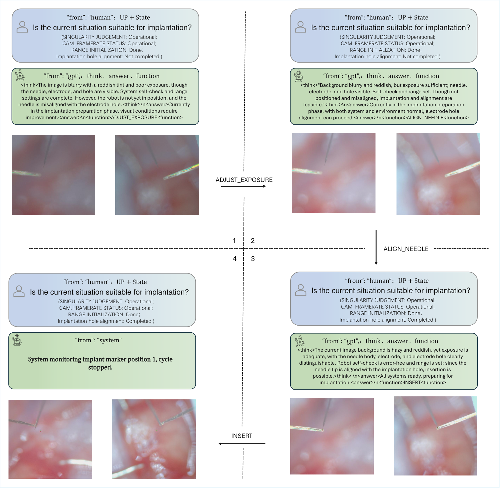

Precision medical robotics
MedVLA
Active perception and function calling for closed-loop robot manipulation
A vision-language model reads binocular microscope views, the task instruction, and the robot state. It selects a function that can improve the next observation or execute a constrained robot action.
Active perception
When the current view is too dark or blurry, MedVLA can request ADJUST_EXPOSURE or ADJUST_FOCUS. The next decision uses the refreshed binocular views, so the model can reassess visibility and alignment before choosing a motion function.
Function-level VLA control
The model returns a structured decision with an intermediate judgment and a proposed function. A separate gate checks the function against the predefined library and the current state. The executor performs approved calls and returns updated observations and robot state. Rejection triggers a stop and handover to the operator.
A real-robot execution trace
In the flexible-electrode experiment, the model first changes what it can see, then selects the next action from the updated observations.
ADJUST_EXPOSUREImprove visibility
The model requests an exposure change and receives new microscope images.
ALIGN_NEEDLERefine alignment
With usable images, it calls the alignment function and checks the updated state.
INSERTExecute after verification
The insertion call proceeds once its state checks pass.

Closed-loop insertion results
Each method was evaluated over 100 trials on the flexible-electrode test platform, with matched starting states.
| Method | Success rate |
|---|---|
| OpenVLA | 8% |
| π₀ | 15% |
| MedVLA · up to 3 decision rounds | 73% |
| MedVLA · up to 6 decision rounds | 95% |